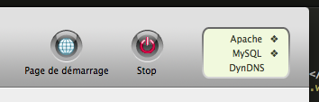
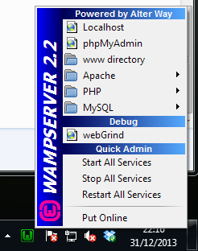

H2 - P2018
Développement web
Semaine Intensive - 2015-01-05
github : https://github.com/brunosimon/hetic-p2018
site : http://bruno-simon.com/hetic/p2018/
contact : bruno.simon@hetic.net - @bruno_simon
PHP
Les bases
Qu'est-ce que c'est
PHP est un language de programmation compilé à la volé
Exécuté en locale
Renvoie le plus souvent des pages HTML
Orienté objet (pas obligatoire)
Concrètement ça sert à quoi ?
Communiquer avec une base de données
Communiquer avec des APIs (Facebook, Twitter, Google, ...)
Traiter des formulaires
Gérer des sessions
Sécuriser des espaces
etc.
Avantages
Grande communauté
Facile à mettre en place (la majorité des hébergeurs)
Toujours en développement
Inconvenients
Syntaxe
Non strict / Permissif
Rapidité d'éxecution (bonne mais pas la meilleure)
Il existe de nombreuses alternatives
Ruby on rails

100% objet
Syntaxiquement concis
Plus rapide dans certains cas
Moins répandu
Node.JS

JS coté serveur
Nouvelles possibilités
Communauté moindre
Facile si vous maîtrisez JS
Et bien d'autres (Perl, Python, ...)
Fonctionnement
Un script PHP est un fichier ayant pour extension .php
C'est le logiciel Apache Server qui va l'interpreter
Il faut donc installer Apache pour pouvoir faire du PHP que ce soit en local (sur votre ordinateur) ou en ligne (sur le serveur)
Lorsque l'utilisateur va accéder au site, Apache va interpreter/executer/renvoyer le script PHP que l'utilisateur à demandé
Il va donc falloir installer Apache
http://goo.gl/c6anfG - WampServer (windows)
http://goo.gl/8VYpRa - MAMP (mac)
Les deux versions (windows et mac) fonctionnent sensiblement de la même manière.
Il faut lancer le logiciel puis lancer le serveur
Les scripts se trouvent en général par défaut dans les dossiers :
Applications/MAMP/htdocs/ (mac)
C:\wamp\www\ (windows)


Hello World
Dans le dossier de votre serveur (htdocs ou www), créez le fichier hello-world.php
<?php
echo 'Hello World';
?>
Pour voir le résultat, rendez-vous à l'adresse suivante depuis votre navigateur :
(Apache doit être lancé)
http://localhost/hello-world.php (Windows)
http://localhost:8888/hello-world.php (Mac)
Explication
La partie PHP est délimitée par <?php et ?>
Il est possible d'utiliser <? et ?> selon la version de PHP
echo indique que le script doit renvoyer ce qui suit
Comme en JS, les instructions se terminent par un ;
<?php
echo 'Hello World';
?>
Commenter votre code
Les commentaires fonctionnent comme en JS
Plusieurs lignes entre /* et */
Une seule ligne précédée par //
<?php
/*
Plusieurs lignes
comme ça
*/
// Une seule ligne comme ça
echo 'Hello World';
?>
HTML et PHP
En dehors des balises PHP <?php et ?> vous pouvez mettre du HTML
Si vous voulez mettre du PHP dans une page HTML pensez simplement à changer l'extension de votre fichier de .html à .php
<?php echo 'Hello World'; ?>
<a href="#">Mon lien</a>
Apprendre seul
- Elephorm (payant, vidéos)
- Code School (partiellement gratuit, vidéos, exercices)
- Open Classrooms (gratuit, bordélique, anciennement Site du Zero)
- Documentation PHP (gratuit, officiel)